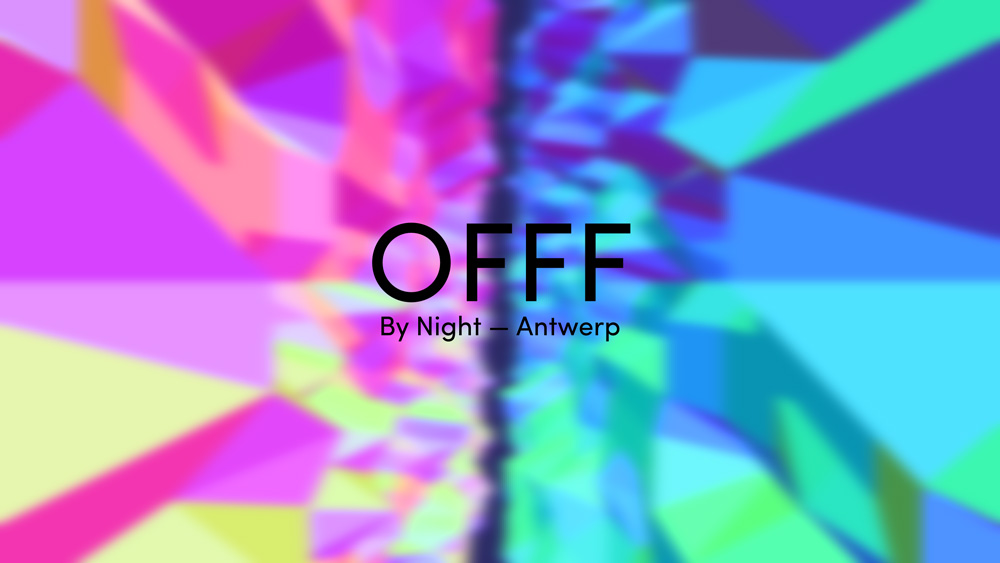
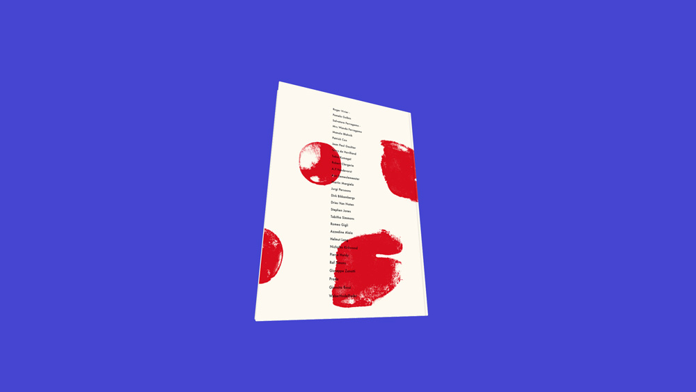

<!DOCTYPE html>
<html lang="en">
  <head>
    <meta charset="UTF-8">

    <title>polyclick</title>

    <link rel="stylesheet" href="/css/app.css" charset="utf-8">
    <link href="https://fonts.googleapis.com/css?family=Cousine:400,700" rel="stylesheet">

    <base href="/" >
  </head>
  <body>

    <!-- main content container -->
    <main></main>

    <!-- overlay container -->
    <div class="overlay"></div>


    <!-- template: navigable page -->
    <script id="navigable-page-template" type="text">
      <div class="wrap">
        <header>
          <a href="/">
            <div class="name">polyclick</div>
          </a>
          <nav>
            <a href="/">work</a>
            <a href="/what">what</a>
            <a href="/contact">contact</a>
          </nav>
        </header>
        <div id="content"></div>
      </div>
    </script>

    <!-- template: hero page -->
    <script id="hero-page-template" type="text">
      <div>
        <div id="content"></div>
      </div>
    </script>


    <!-- work: overview -->
    <script id="work-overview" type="text" template="navigable-page-template">
      <a href="work/solitude">
        <figure>
          
          <figcaption>
            <div class="left">#solitude</div>
            <div class="right">interactive installation</div>
          </figcaption>
        </figure>
      </a>

      <a href="work/offfbynight">
        <figure>
          
          <figcaption>
            <div class="left">#offfbynight</div>
            <div class="right">research &amp; development</div>
          </figcaption>
        </figure>
      </a>

      <a href="work/coccodrillo">
        <figure>
          
          <figcaption>
            <div class="left">#coccodrillo</div>
            <div class="right">online browsable book</div>
          </figcaption>
        </figure>
      </a>

      <a href="work/inthegrater">
        <figure>
          
          <figcaption>
            <div class="left">#inthegrater</div>
            <div class="right">interactive installation</div>
          </figcaption>
        </figure>
      </a>
    </script>

    <!-- what page -->
    <script id="what" type="text" template="navigable-page-template">
      Yukes
    </script>


    <!-- work: solitude detail -->
    <script id="work-solitude" type="text" template="hero-page-template">
      <div class="hero"></div>
      <div class="wrap">
        <header>
          <div class="name">#solitude</div>
          <div class="sub thin">interactive installation</div>
        </header>
        <div class="centerer">
          <section class="section-1">
            <p class="intro">
              Solitude is an interactive art installation which criticizes the
              rat race that surrounds us all. Forced by high expectations and
              surrounded by intense impulses we get torn apart between lonely
              emptiness and uneasy voids.
            </p>
            <ul class="tags thin">
              <li>#openframeworks</li>
              <li>#arduino </li>
              <li>#madmapper</li>
              <li>#ableton</li>
              <li>#dmx</li>
            </ul>
            <figure></figure>
            <figure></figure>
            <figure></figure>
          </section>
          <section class="section-2">
            <p class="technical right">
              From a technical point of view the installation
              consists of six led tubes and a pressure sensitive
              floor. When people walk through the installation,
              pressure sensitive pads get triggered. Then, an
              #arduino communicated the location of the visitor to
              an #openframeworks application. These ones &amp; zeroes
              then got sent over to an #ableton #max plugin. The
              plugin then manipulated the background audio through
              different audio filters. At the same time, the
              #openframeworks app altered the animation sequences on
              the tubes, so both our eyes and ears got stimulated.
            </p>
            <figure></figure>
            <div class="video"><iframe src="https://player.vimeo.com/video/162837848?title=0&byline=0&portrait=0" width="810" height="456" frameborder="0" webkitallowfullscreen mozallowfullscreen allowfullscreen></iframe></div>
          </section>
          <section class="section-3">
            <p class="soundscape">
              The soundscape was mixed together from a list of
              mysterious, glitchy, experimental music tracks.
              Some featured artists were: Monolake, Senking,
              Kanding Ray, alva noto, &amp; Gricha Lichtenberger.<br/>
              <br/>
              Listen
            </p>
            <figure></figure>
            <figure></figure>
            <p class="credits">
              Credits<br/>
              <br/>
              Curator: KOP VZW<br/>
              Concept: Nacht Collectief<br/>
              Production: TAAI<br/>
              Soundscape: polyclick<br/>
              Photos: Matthias Hannes, polyclick
            </p>
          </section>
        </div>
      </div>
    </script>

    <!-- work: offfbynight detail -->
    <script id="work-offfbynight" type="text" template="hero-page-template">
      <div class="hero"></div>
      <div class="wrap">
        <header>
          <div class="name">#offfbynight</div>
          <div class="sub thin">splash page research &amp; development</div>
        </header>
        <div class="centerer">
          <section class="section-1">
            <ul class="tags thin">
              <li>#webgl</li>
              <li>#shaders</li>
              <li>#threejs</li>
              <li>#cinema4d</li>
              <li>#glsl</li>
            </ul>
            <p class="intro">
              A collection of realtime generated visuals in the browser. These
              sketches are built with bleeding edge web technology like #webgl
              and #glsl. This research project is commissioned by the sexy web
              agency: Mr Henry, Antwerp. Art and colors are loosely inspired on
              the movie Blade Runner.
            </p>
            <figure></figure>
            <figure></figure>
            <figure></figure>
            <figure></figure>
          </section>
          <section class="section-2">
            <p class="blurshader">
              A multilayer blur shader that obscures
              primitive shapes and turns them into an
              animating fluid multicolor gradient.
            </p>
            <figure></figure>
            <figure></figure>
          </section>
          <section class="section-3">
            <p class="technical">
              All scenes are built in the #three.js
              framework and rendered to a #webgl
              backed canvas element.
            </p>
            <figure></figure>
            <figure></figure>
            <figure></figure>
          </section>
          <section class="section-4">
            <figure></figure>
            <p class="credits right">
              Credits<br/><br/>
              Production: Mr Henry<br/>
              Development: polyclick<br/>
              Inspiration: Blade Runner
            </p>
          </section>
        </div>
      </div>
    </script>

    <!-- work: coccodrillo detail -->
    <script id="work-coccodrillo" type="text" template="hero-page-template">
      <div class="hero"></div>
      <div class="wrap">
        <header>
          <div class="name">#coccodrillo</div>
          <div class="sub thin">three dimensional browsable book</div>
        </header>
        <div class="centerer">
          <section class="section-1">
            <p class="intro">
              In interactive, browsable online book built with 3D technology for
              the browser. This project features a custom vertex shader to curl
              the book pages realistically. Design &amp; concept by Mr Henry.
            </p>
            <figure></figure>
            <figure></figure>
            <figure></figure>
          </section>
          <section class="section-2">
            <ul class="tags thin">
              <li>#webgl</li>
              <li>#shaders</li>
              <li>#threejs</li>
              <li>#cinema4d</li>
              <li>#glsl</li>
            </ul>
            <figure></figure>
            <figure></figure>
          </section>
          <section class="section-3">
            <figure></figure>
            <figure></figure>
            <p class="credits">
              Credits<br/><br/>
              Concept: Mr Henry<br/>
              Design: Mr Henry<br/>
              Development: polyclick<br/>
              Model: REVOLVER
            </p>
          </section>
        </div>
      </div>
    </script>

    <!-- work: inthegrater detail -->
    <script id="work-inthegrater" type="text" template="hero-page-template">
      <div class="hero"></div>
      <div class="wrap">
        <header>
          <div class="name">#inthegrater</div>
          <div class="sub thin">interactive installation</div>
        </header>
        <div class="centerer">
          <section class="section-1">
            <ul class="tags thin">
              <li>#leapmotion</li>
              <li>#webgl</li>
              <li>#shaders</li>
              <li>#glsl</li>
            </ul>
            <p class="intro">
              Interactive installation built using web technologies presented at
              the `#integrated conference afterparty` (#inthegrater), Antwerp. The
              installation features four different hand gestures manipulating
              four interactive scenes.
            </p>
            <p class="gestures">
              Gesture recognition was achieved using
              a Leap motion. The raw input was sent
              off to a computer displaying a #webgl
              scene.
            </p>
            <figure></figure>
            <figure></figure>
            <figure></figure>
            <figure></figure>
            <figure></figure>
          </section>
        </div>
      </div>
    </script>


    <script src="lib/system.js"></script>
    <script src="config.js"></script>
    <script>System.import('./js/app')</script>
  </body>
</html>
